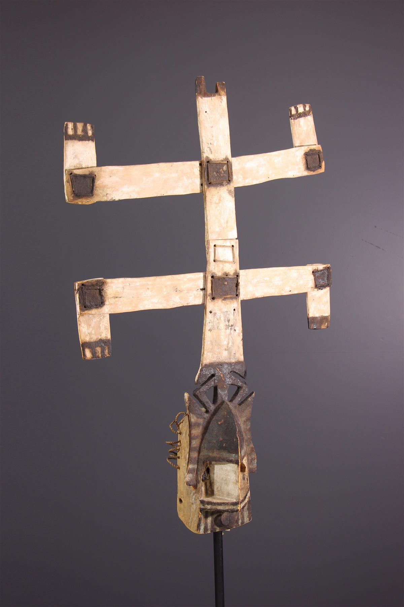
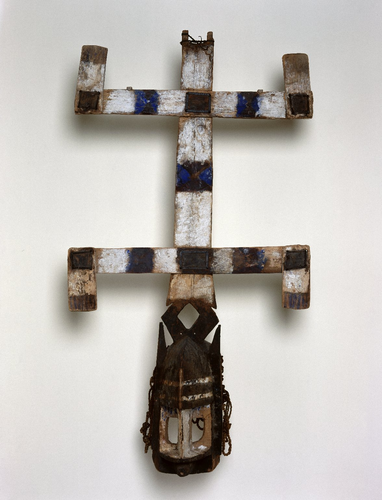

<div  class="bg-overlay" >
<div class="overlay">
<div style="display: flex; justify-content: space-between; align-items: flex-start; border: 20px solid #000;">
    <div style="width: 50%; height: 100%;">
        <div #rendererContainer style="height: 90%; margin-top: 150px; border-radius: 20px;"></div>
        <button (click)="toggleRotation()" class="py-2.5 px-5 me-2 mb-2 text-sm font-medium text-gray-900 focus:outline-none bg-white rounded-lg border border-gray-200 hover:bg-gray-100 hover:text-blue-700 focus:z-10 focus:ring-4 focus:ring-gray-100 dark:focus:ring-gray-700 dark:bg-gray-800 dark:text-gray-400 dark:border-gray-600 dark:hover:text-white dark:hover:bg-gray-700">Stopper ou activer la Rotation</button>
    </div>
    <div style="width: 50%; height: 60%; display: flex; flex-direction: column; justify-content: center; align-items: center; margin-top:249px;">
        <div class="block max-w-md p-6 bg-white border border-gray-200 rounded-lg shadow hover:bg-gray-100 dark:bg-gray-800 dark:border-gray-700 dark:hover:bg-gray-700">
          <h1 class="mb-2 text-2xl font-bold tracking-tight text-gray-900 dark:text-white">Masque Kanaga : <br> La communauté Dogon du Mali</h1>
          <p class="font-normal text-lg text-gray-700 dark:text-gray-400 leading-relaxed mb-4">
            Le Masque de la société secrète.
          </p>
          <p class="font-normal text-lg text-gray-700 dark:text-gray-400 leading-relaxed mb-4">
            Ce masque est utilisé lors des rituels de la société secrète. Elle est également connue sous le nom de société Awa du peuple Dogon...
          </p>
          <div [class.hidden]="!showContent">
            <p class="font-normal text-lg text-gray-700 dark:text-gray-400 leading-relaxed mb-4">
              Le terme "awa" fait partie du langage religieux secret des dogons, le sigi so. Le mot est utilisé pour décrire différentes choses : les tissus et les masques portés par les individus de la société, les danseurs masqués, tous les hommes en âge de participer aux danses rituelles ou la société elle-même.
            </p>
            <p class="font-normal text-lg text-gray-700 dark:text-gray-400 leading-relaxed mb-4">
              Cette société est réservée aux hommes circoncis. Les membres de cette société utilisent ce masque pour danser la "danse du masque Kanaga". C'est la danse considérée comme l'une des plus difficiles. Cette danse a pour but de mettre en avant la masculinité et les prouesses des interprètes.
            </p>
          </div>
          <button (click)="toggleContent()" class="mt-4 px-4 py-2 text-white bg-blue-500 rounded hover:bg-blue-700">{{ buttonText }}</button>
        </div>
      </div>
</div>


<div class="flex flex-col justify-center items-center h-screen">
    <h1 class="mb-4 text-2xl text-center text-white">Photos du masque Kanaga</h1>
    <div class="grid grid-cols-2 md:grid-cols-2 gap-0">
        <div>
            
        </div>
        <div>
            
        </div>
    </div>
</div>

</div>
</div>